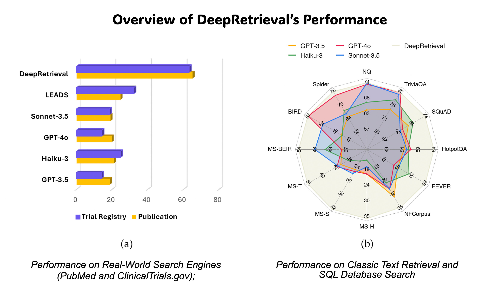
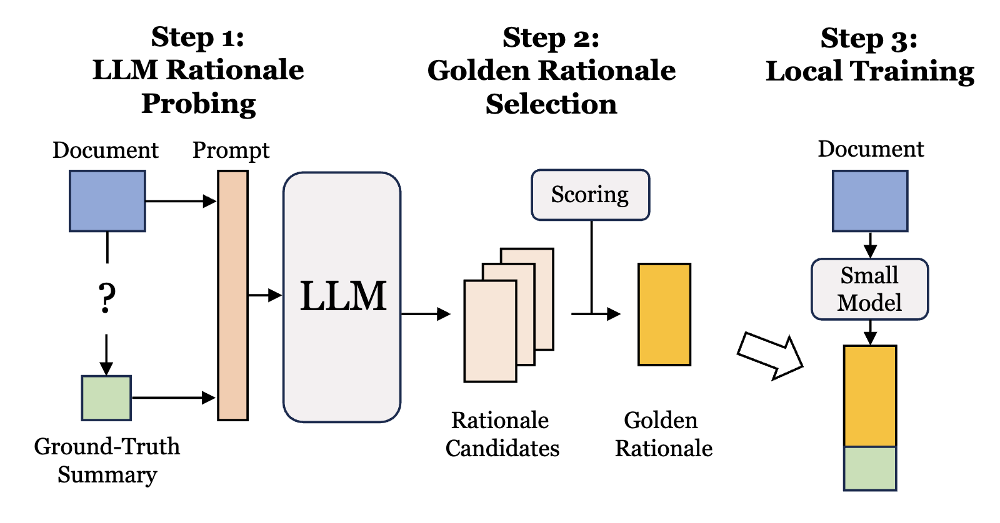
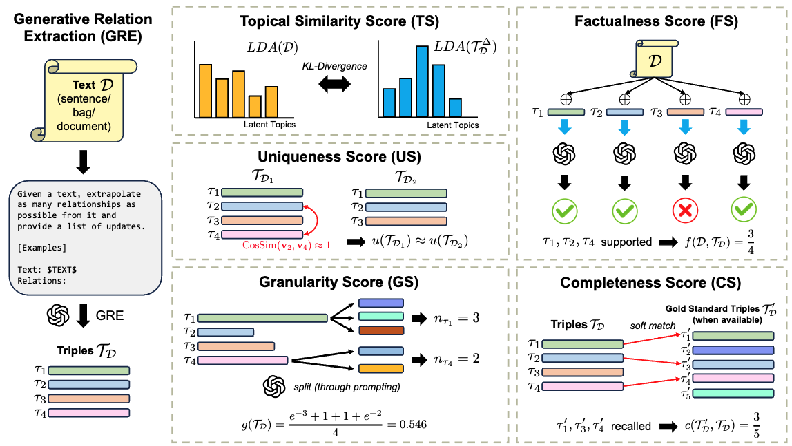

Patrick Jiang
CS Ph.D. Candidate @ UIUC

Hello! I’m Patrick Jiang, a Ph.D. candidate in Computer Science at UIUC and a member of DMG. I’m advised by Prof. Jiawei Han and co-advised by Prof. Jimeng Sun.
I’m a Research Fellow at Anthropic, and was a Student Researcher at Google Research.
My research lies at the intersection of language model agents, information retrieval, post-training, and AI control. I study how language models interact with tools and external environments to seek information, reason over evidence, and solve complex tasks. My prior work helped pioneer the training of search agents with on-policy reinforcement learning.
I also study how to control AI to be more capable and aligned.
Publications (2023 - present)
▶ Filter by topic (intersection)
- COLM’25

DeepRetrieval: Hacking Real Search Engines and Retrievers with Large Language Models via Reinforcement LearningIn The Second Conference on Language Modeling(The first open-source search agent trained with on-policy RL)LLM Tuning (RL)Information Retrieval - NAACL’24

TriSum: Learning Summarization Ability from Large Language Models with Structured RationaleIn Proceedings of the 2024 Conference of the North American Chapter of the Association for Computational Linguistics: Human Language Technologies (Volume 1: Long Papers)LLM Tuning (SL)Summarization - NAACL’24

GenRES: Rethinking Evaluation for Generative Relation Extraction in the Era of Large Language ModelsIn Proceedings of the 2024 Conference of the North American Chapter of the Association for Computational Linguistics: Human Language Technologies (Volume 1: Long Papers)KGIELLMEvaluation

Experience
Pre-PhD Industry Experience
Tutorials & Talks
Talk of s3 @ Meta PhD Forum
Meta | Oct 30 2025
Google Research Internal Talk (Athena)
Google Research | Aug 21 2025
Retrieval And Structuring Augmented Generation with Large Language Models
KDD 2025 Tutorial | Website Link | Aug 03 2025
MedKLM: Unifying Large Language Models and Knowledge Graphs for Medicine and Healthcare
KDD 2025 Tutorial | Website Link | Aug 04 2025
General Research Talk
Hong Kong University of Science and Technology (HKUST) | Jun 26 2025
DeepRetrieval: Pushing the Boundaries of Information Retrieval with LLMs in Health Domain
National Institutes of Health (NIH) | May 2 2025
Reasoning-Enhanced Healthcare Predictions with Knowledge Graphs
BioNLP Group @ UMass Amherst | Dec 13 2024
PyHealth Hands-on Tutorial
KDD 2023 Tutorial | Website Link | Aug 06 2023
▶ Software & Models (click to expand)
Software & Models
PyHealth - A Deep Learning Toolkit for Healthcare

Main Developers: Chaoqi Yang, Zhenbang Wu, Patrick Jiang, Zhen Lin, Benjamin Danek
TxBKG - Convert Any PDFs into Highly Interactive Knowledge Graphs!
Developer: Patrick Jiang
Text2Graph-LLM: Specialized LLMs for Converting Text to Graphs
Developer: Patrick Jiang
DeepRetrieval: Hacking Real Search Engines and Retrievers with LLMs via RL
Developer: Patrick Jiang, Jiacheng Lin, Lang Cao